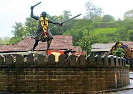

Panhala Fort

- The history of Panhala is closely linked with the history of the Maratha empire, and with its founder, Chatrapati Shivaji Raje.
- Panhala is the only fort where Shivaji spent more than 500 days, other than his childhood homes.
- It was Maratha State capital until 1782 and in 1827 it became part of the British Empire.
- This imposing fort, 20 km northwest of Kolhapur, is built on an outlying spur of the Sahyadris, rising more than 400 m above plain, and is the largest of all the Deccan forts.
- The strategic importance of Panhala, guarding one of the principal routes through the Western Ghat, can be judged from its long and varied history.
- Built between 1178 and 1209, it first served as the headquarters of the Shilahara ruler Bhoja II, and subsequently passed into hands of the Yadavas.
- It was a favorite outpost of the Bahamanis of Bidar; Mahmud Gawan, the powerful prime minister, encamped here during the rainy season of 1469.
- By the beginning of the 16th century Panhala was absorbed into the kingdom of Bijapur.
- The Adil Shahis were responsible for strengthening and rebuilding the ramparts and gateways.
- The fort was raided by Shivaji in 1659, but it was not until 1673 that he was able to occupy it permanently.